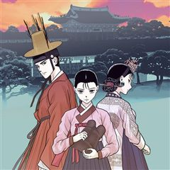
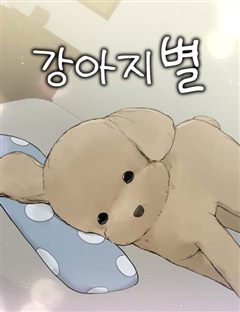
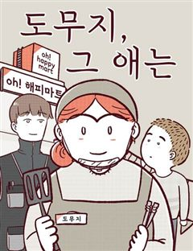

드라마 힐링·감성 웹툰 추천 TOP 30
드라마 작품 중에서 힐링, 공감, 가족, 감성드라마 같은 요소가 들어간 작품만 골랐어요. 네이버웹툰·카카오웹툰·레진코믹스에서 조건에 맞는 작품 115개 중 인기 순으로 30개를 골랐어요. 인기 TOP 3: 소녀의 세계, 수린당 성군전, 쌍갑포차
2026-10-10 기준 · 성인 작품 제외
내 취향으로 더 좁혀서 추천받기 →-
1
 네이버웹툰
네이버웹툰소녀의 세계
완벽해 보이지만 사실 외로웠던 백조들과 맘씨 착한 오리가 만나 여러 갈등을 함께 겪으며 진짜 친구가 되어가는 소녀들의 찐 우정물
드라마힐링공감감성드라마설렘폭발네이버웹툰에서 보기 → -
2
 카카오웹툰
카카오웹툰수린당 성군전
[수린당 성군전] 선계와 인간계를 이을 단 한 명의 성군, ‘한울’. 지덕체를 두루 갖춘 완벽한 아이의 탄생에 선계의 신들은 신이 났다. 그것도 아주 지나치게! 과도한 기대는 때론 독이 될 수도 있는 법. 한울이를 금쪽이가 되지 않게 밝고 바른 아이로 키울 수 있을까? 성군의 운명을…
드라마힐링카카오웹툰에서 보기 → -
3
 카카오웹툰
카카오웹툰쌍갑포차
예상치 못한 시간, 예상치 못한 장소에 나타나는 쌍갑포차! 쌍갑포차를 운영하는 월주는 과연 누구일까? 쌍갑포차에 찾아오는 다양한 손님들의 감동적인 이야기! 한국 전통 신화 이승과 저승을, 꿈의 세계 그승과 함께 재창조한 세계관으로, 덤덤하게 써 내려진 깊이 있는 사람들의 사연 속 조선…
드라마공감눈물샘자극옴니버스카카오웹툰에서 보기 → -
4
 네이버웹툰
네이버웹툰백수세끼
백수 시절 내 곁을 지켜줬던 그녀... 돌아와 주면 안 되겠니? 음식 메뉴마다 담겨 있는 우리들의 연애 흑역사!
드라마공감감성드라마리얼로맨스캠퍼스네이버웹툰에서 보기 → -
5
 카카오웹툰
카카오웹툰저승식당
“8, 8, 8, 82억이요?!” 흙수저 인생에 갑자기 찾아온 82억의 건물!! 그리고… 식당? 식당에 찾아오는 손님들의 행색은 수상하기 짝이 없고 알 수 없는 말만 하는데……. 서울 한복판에서 벌어지는 등골 서늘한 감동 스토리. 매일 밤 열한 시부터 한 시까지. 저승식당, 지금 영업…
드라마힐링음식&요리옴니버스카카오웹툰에서 보기 → -
6
 카카오웹툰
카카오웹툰수의사님! 안녕하세요?
[멍멍동물병원] 동물병원을 개원한 첫날, 응급환자를 맞이하게 되고 다행히 별문제 없이 치료를 마쳤는데... "많이 아팠지? 잘 버텼어, 몽이야." "별말쓰믈여. 성생님 덕부네 사라쓰니다." 설마 지금... 말티즈가 말을 한 건가?? "근데 성생님은 내 말이 들려요?" 어제까지만 해도…
드라마힐링카카오웹툰에서 보기 → -
7
 카카오웹툰
카카오웹툰환골탈태
부드러운 살가죽, 짧고 까칠한 털, 작고 조그만 발.... 이 해괴하고 귀여운 생물체는 대체 무엇?! 해골(스켈레톤)은 독립하면서 아기 고양이를 기르기로 한다. 드디어 이사 날에 인간계 대행 서비스를 이용해 받은 아기 고양이! 그런데 몸에 털도 별로 없고... 아기 고양이가 원래 이렇…
드라마힐링카카오웹툰에서 보기 → -
8
 카카오웹툰
카카오웹툰0살부터 슈퍼스타
엘프, 요정, 슬라임, 선물상자, 마왕 등 수천 번의 환생에 이어 몇 번째인지도 모를 새로운 삶. 인간 아기로 태어난 나 이서준! 내가 살아온 기억들이 동화처럼 남아 있는 생의 도서관 속에서 가장 간절히 원했던 꿈이 있는 전생을 보게 된다. 거기다 사람들의 눈을 사로잡는 이능력들까지!…
드라마힐링눈물샘자극성장물카카오웹툰에서 보기 → -
9
 카카오웹툰
카카오웹툰닥터 최태수
대학병원의 가장 말단 의사, 걸어다니는 깡통― 인턴. 하루하루, 인턴으로서의 고된 나날을 보내던 최태수는 우연히 세계최정상의 흉부외과의사인 '리처드 카프레네'의 임종을 지키게 된다. 이때, 놀랍게도 카프레네의 모든 의학지식이 고스란히 최태수에게 전이되는데…!! 따뜻한 심장을 지닌 천재…
드라마힐링공감눈물샘자극카카오웹툰에서 보기 → -
10
 카카오웹툰
카카오웹툰이번 생은 아역부터
뭘 해도 망하던 망돌 인생 4년 차 강수현. 겨우 찾은 배우로서의 적성으로 드디어 빛을 보나 싶었지만, 반대편에서 오는 트럭과 충돌하여 죽음의 문턱이 다가와 절망하는데... “아니 잠깐, 나 안 죽었잖아?” 정신을 차려보니 거울에 비친 모습은 최고로 귀여웠던 5살 때의 나? 그래, 이…
드라마힐링성장물카카오웹툰에서 보기 → -
11
 카카오웹툰
카카오웹툰RAINBOW
지도에도 없고 위성에도 잡히지 않는 숨겨진 파라다이스 '무지개 섬' 이 섬을 지키는 파란 히어로 '무지개' 그리고, 소소하고 평온한 행복을 즐기는 평범한 훌라 걸 '김순이', 화려하고 아름다운 소울시티의 히어로 '오로라' 너무나 다른 이 세 명이 만들어가는 사랑과 성장 이야기.
드라마힐링설렘폭발로맨틱코미디카카오웹툰에서 보기 → -
12카카오웹툰
콜사인
이기적인 세상에 이타적인 사람들이 있기도 하다. “사람 목숨만큼 귀한 건 없다……. 아닙니까?” “물론 그렇지. 그런데 한 사람을 구한다는 의미를 알아?” “무슨 말씀이신지?” 태건이 고개를 갸웃거리자 이채용 팀장이 빙그레 웃었다. “한 사람을 구하면, 나아가 그 사람 가족을 구하는…
드라마힐링카카오웹툰에서 보기 → -
13
 카카오웹툰
카카오웹툰형아, 나 귀엽지?
[20살 차이 형제의 힐링 감성 육아기] 갑작스러운 교통사고로 부모님을 잃게 된 시혁과 20살 차이가 나는 남동생 시하. “아아.” 이 말밖에 하지 못하는 동생. 이런 동생과 자신을 둘러싸고 가족들이 장례식장에서 수군거렸다. “둘이 어떻게 해요? 누가 맡으려고 해요?” “어유. 이제…
드라마힐링육아물카카오웹툰에서 보기 → -
14
 네이버웹툰
네이버웹툰마흔 즈음에
어느 덧 마흔살이 된 현성민은 주변을 돌아보니 혼자가 되었다는 현실을 절실히 깨닫게 된다. 자신의 인생 뿐 아니라 직장에서도 위기를 맞게 된 현성민은 진정한 행복을 찾기 위해 고군분투 하기로 결심한다. 불혹의 나이, 아직 늦지 않았다!
드라마공감2024 연재직행열차고자극드라마리얼로맨스네이버웹툰에서 보기 → -
15
 네이버웹툰
네이버웹툰일립예고 학생들
보이는 건 뭐든 똑같이 그릴 수 있는 인간 복사기 한솔! 어느 날 VR 게임에서 만난 미스터리한 천재의 그림을 보고 자극을 받는다. 더 넓은 세계의 그림이 궁금해진 한솔은 한적한 시골 마을을 떠나 그림을 배우기 위해 예술계 최고 명문 고등학교인 일립예고 입시에 도전한다. 우여곡절 끝에…
드라마감성드라마감성적인입시우정네이버웹툰에서 보기 → -
16
 네이버웹툰
네이버웹툰천재는 평범하게 살기로 했더
세간이 인정한 성공한 인생의 주인공, '손진혁.' 하지만 정작 진혁은 그저 사랑하는 가족와 함께하는 평범한 삶을 살고 싶었을 뿐, 그러지 못한 현실에 쓸쓸하고 외로운 마음을 감출 수 없는데... 어느 날, 사고로 눈을 뜨니 그토록 원하던 부모님을 잃기 전 9살의 시절로 돌아왔다! 과연…
드라마힐링가족감성적인과거네이버웹툰에서 보기 → -
17

카카오웹툰세자, 죽이기
궁중 하녀 모제비는 동궁 침방의 나인, 남모란을 모시며 평온한 나날을 보내고 있었다. 그러던 어느 날, 남모란이 거처를 옮긴 뒤 행방이 묘연해진다. 불안한 마음에 모제비는 몰래 동궁에 숨어들어 모란의 행방을 묻고자 했으나, 그곳에서 뜻밖의 비밀을 엿보게 된다. 동궁에 감춰진 끔찍한 진…
드라마공감정치카카오웹툰에서 보기 → -
18
 네이버웹툰
네이버웹툰뽀대작렬
사랑하지 않는 시대 꿈과 사랑은 커녕 계획도 사람도 없는 서른일곱 '김하영' 그런 그녀가 20년 전 뽀대나게 사랑했던 열일곱 '김 선'으로 돌아간다.
드라마힐링감성드라마감성적인청춘네이버웹툰에서 보기 → -
19
 카카오웹툰
카카오웹툰닥터 플레이어
왕의 사생아, 레이몬드. 사람들의 멸시로부터 도망쳐 치료사가 되지만, 결과는 F급 낙제 치료사라는 낙인뿐. 그러던 어느 날, 그에게 기적이 찾아온다. [플레이어로 각성하였습니다!] [직업 : 외과의사(SSS급)] 이 세계에 존재하지 않는 의학 지식을 얻게 된 레이몬드. 최초의 외과의사…
드라마힐링미스터리직업드라마카카오웹툰에서 보기 → -
20
 카카오웹툰
카카오웹툰오늘 메뉴 추천 좀!
아버지가 어머니를 살해한 사건으로 갑자기 모든 양육자를 잃은 태호와 지호 남매. 감당하기 힘든 현실에 처했지만 태호는 어린 동생 지호를 위해 집밥의 고수가 되기로 한다. 입 짧기로 소문난 사회복지사 규진은 이들의 소식을 듣고 그대로 방치할 수 없다고 판단, 어떻게든 보호 시설과 연결시…
드라마힐링음식&요리카카오웹툰에서 보기 → -
21
 네이버웹툰
네이버웹툰고대동물기
모든 생명은 무엇을 위해 살아가고, 무엇을 위해 죽어갈까? 세상으로부터 버려진 채 늙어 죽어가는 티라노사우루스 한 마리. 그런 그에게 죽기 전에 이뤄야 할 꿈이 생겼다. 이 땅에 살고, 이 땅에 죽어간 생명들의 기묘하고도 특별한 이야기
드라마힐링감성드라마감성적인옴니버스네이버웹툰에서 보기 → -
22
 카카오웹툰
카카오웹툰괴식식당
취두부, 두리안, 수르스트뢰밍의 시대는 갔다. 들어는 봤는가? 문자 그대로 죽을 만큼 맛없는 요리! 하지만 능력이 오른다!? 전 차원 최고(?)의 맛을 자랑하는 테라의 요리가 최강의 용사, 유승우의 손에 의해 평화로운(?) 지구를 찾아온다. 인내하라! 먹고 죽지만 않으면 허약한 당신도…
드라마힐링음식&요리카카오웹툰에서 보기 → -
23
 카카오웹툰
카카오웹툰1년차 만렙 매니저
업계 1위 탑엔터테이먼트의 부사장, 탑여배우 주영인을 아내로 맞은 정윤호 누가 봐도 성공한 삶이지만, 가슴 한편엔 언제나 공허함이 남아있었다. 그때, 다른 선택을 했더라면 내 인생은 달라졌을까? 10년 전 그날, 소중한 미소를 잃었다. 그리고, 지금은 위암 말기 시한부 선고로 죽음 앞…
드라마힐링성장물카카오웹툰에서 보기 → -
24
 카카오웹툰
카카오웹툰백의사자
옛날 어느 마을에 연이어 사람이 죽어나가는 괴변이 발생한다?! 사람들이 원흉으로 지목한 것은 마을 근처에 살던 백발의 소년. 소년은 이유도 모른 채 죽음을 맞이하고, 이승을 홀로 헤매이게 된다. 그때 손을 내밀어 준 것은 저승사자의 우두머리인 '적의사자'. 그는 소년에게 '설기'라는…
드라마힐링성장물카카오웹툰에서 보기 → -
25
 카카오웹툰
카카오웹툰기적의 물리치료사
물리치료사 이기적. 센터는 망하고, 여자친구에게는 차이고...! 되는 것 하나 없는 날, 떨어지는 별을 맞고 나서 상태창이 보이기 시작했다?! 최고의 물리치료사로 성장하는 이기적의 이야기!
드라마힐링눈물샘자극카카오웹툰에서 보기 → -
26

네이버웹툰강아지별
사람보다 먼저 떠나게 된 반려견들이 가는 곳, 강아지별. 이곳에선 일 년이 하루와 같다고 한다. 그런 강아지 별에 오게 된 아홉 살 토리. 가족들이 없는 낯선 곳에서 토리를 반겨주는 선생님과 친구들. 선생님 말씀으로는 백 밤만 자면 가족들과 만날 수 있다는데. 오자마자 가족이 보고 싶…
드라마힐링가족감성드라마감성적인네이버웹툰에서 보기 → -
27
 네이버웹툰
네이버웹툰오사카 환상선
오사카의 재일조선인 소년 김용은 우연히 야쿠자 조카와의 싸움에 휘말린다. 야쿠자의 명령으로 조선인 부락에 잠입해 신분증을 훔치는 임무를 맡게 된 김용. 평범해 보였던 마을 사람들은 무언가를 꾸미고 있는 듯 한데.. 처음에는 임무를 완수해 돈을 받을 생각 뿐이었지만, 점차 마을 사람들과…
드라마감성명작시대물생존네이버웹툰에서 보기 → -
28
 카카오웹툰
카카오웹툰던전 호텔에 오신 것을 환영합니다
[클래스 : 호텔 경영자(히든)로 각성했습니다!] 맥x모x골x 커피가 포션이 되고, 하루 묵기만 하면 체력이 회복되는 수상한 호텔. 이곳의 경영자로 각성해버렸다! 손님은 모두 헌터, 호텔은 던전 한복판. 영업용 미소만 걸치면 돈이 들어오잖아?! "어서 오세요, 영춘 호텔에 오신 것을…
드라마힐링카카오웹툰에서 보기 → -
29
 카카오웹툰
카카오웹툰생각해볼게
책에 파묻혀 지내는 열다섯 살 고영희. 인간관계는 재난과 같다고 생각한다. ‘가족’, ‘연인’이라는 말에는 그저 몸서리가 쳐질 뿐. 생각도 걱정도 많은 고영희 앞에 "좋아한다."며 마음을 고백하는 같은 반 소녀 김강아의 출현! 게다가 우연의 장난으로 한 집에 살기까지 해야 한다니...…
드라마힐링개그성장물카카오웹툰에서 보기 → -
30

네이버웹툰도무지 그애는
생계를 위해 아르바이트 전선에 뛰어들었으나 계속 거절만 당한 무지는 지푸라기라도 잡는 심정으로 오! 해피마트 시식 아르바이트를 시작한다. 낯선 환경에 주눅이 들지만, 거칠었던 그 곳의 첫인상이 조금씩 바뀌어 가는데.. 세상을 배워가는 수많은 '그 애'들의 이야기
드라마힐링공감일상청춘네이버웹툰에서 보기 →